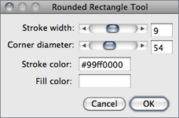
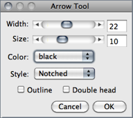
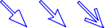
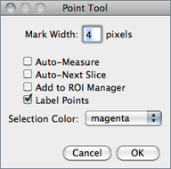
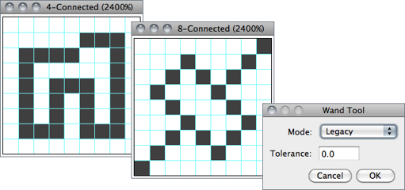
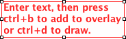
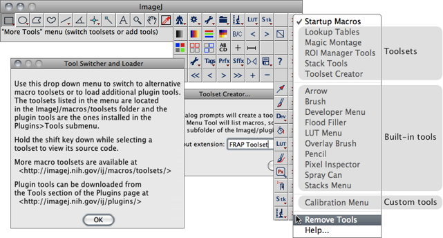
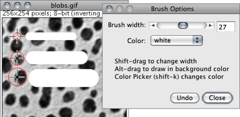
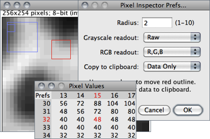

19 Tools
19.1 Area Selection Tools
These tools share the first four toolbar slots. As described in Toolbar↑, use the right click drop-down menu to switch a different tool. Selection Color can be changed by double clicking on the Point Tool↓/Multi-point Tool↓.
19.1.1  Rectangular Selection Tool
Rectangular Selection Tool
Location, width, height, and aspect ratio are displayed in the status bar during drawing (see 6: Toggling Calibrated Units↑).
Modifier keys:
Shift Selection is constrained to a square
Alt Current aspect ratio is maintained while resizing
With arrow keys, width and height are changed one pixel at a time
With arrow keys, width and height are changed one pixel at a time
Ctrl Selection is resized around the center
Rounded Rectangular Selection Tool↓, Specify…↓, 18: Embedding Color Annotations in Grayscale Images↓, Toolbar Shortcuts↓
19.1.2 Rounded Rectangular Selection Tool

This tool creates rectangular shapes with rounded corners. It shares the same toolbar slot and the same modifier keys with the Rectangular Selection Tool↑. Double clicking on its icon opens the depicted dialog in which is possible to specify:
Stroke width The width of the contour.
Corner diameter The arc size at the vertices.
Stroke/Fill Color The contour (stroke) color or the filling color of the rounded rectangle. As explained in , selections can be either filled or contoured, but not both. The nine default selection colors (black, blue, cyan, green, magenta, orange, red, white, yellow) can be typed as text. Any other color must be typed in hex notation (see 20: Hexadecimal Color Values↓).
Rectangular Selection Tool↑, 18: Embedding Color Annotations in Grayscale Images↓, Toolbar Shortcuts↓
19.1.3  Oval Selection Tool
Oval Selection Tool
Location, width, height, and aspect ratio are displayed in the status bar during drawing (see 6: Toggling Calibrated Units↑).
Modifier keys:
Shift Selection becomes circular
Alt Current aspect ratio is maintained while resizing
With arrow keys, width and height are changed one pixel at a time
With arrow keys, width and height are changed one pixel at a time
Ctrl Selection is resized around the center
Elliptical Selection Tool↓, Specify…↓, 6: Toggling Calibrated Units↑, 18: Embedding Color Annotations in Grayscale Images↓, Toolbar Shortcuts↓
19.1.4 Elliptical Selection Tool
Ellipse properties are adjusted by dragging the four handlers on its antipodal points [4]. To rotate or resize, drag the handlers on its major axis (transverse diameter). To adjust eccentricity, drag the handlers on its minor axis (conjugate diameter).
19.1.5 Brush Selection Tool
Adjusts (refines) the shape of area selections using a circular ‘brush’ [5]. ImageJ will treat the adjusted ROIs will become Clicking inside the area selection and dragging along its boundary will expand the boundary outwards. Clicking outside the area selection and dragging along its boundary will shrink the boundary inwards. Once the tool has been applied, ImageJ will treat the adjusted ROIs as Composite Selections↑. The brush diameter can be adjusted by double clicking on the tool icon.
Modifier keys:
Shift Holding Shift forces the Brush Selection Tool to add pixels to the selection
Alt Holding Alt forces the Brush Selection Tool to subtract pixels from the selection
19.1.6  Polygon Selection Tool
Polygon Selection Tool
Creates irregularly shaped selections defined by a series of line segments. Segment length and angle are displayed in the status bar during drawing (see 6: Toggling Calibrated Units↑). To create a polygon selection, click repeatedly with the mouse to create line segments. When finished, click in the small box at the starting point (or double click), and ImageJ will automatically draw the last segment. The vertex points that define a polygon selection can be moved and modifier keys can be used to delete or add new vertexes to the polygon.
Modifier keys:
Shift Shift-clicking on an existing vertex of the polygon adds a new corner point, smoothing the polygon edge
Alt Alt-clicking on an existing vertex of the polygon removes it
Segmented Line Selection Tool↓, , 6: Toggling Calibrated Units↑, 18: Embedding Color Annotations in Grayscale Images↓, Toolbar Shortcuts↓
19.1.7  Freehand Selection Tool
Freehand Selection Tool
As with the polygon selection tool, ImageJ automatically draws the last segment. Location and intensity of starting pixel are displayed in the status bar during drawing.
Freehand Line Selection Tool↓, Polygon Selection Tool↑, , 6: Toggling Calibrated Units↑, 18: Embedding Color Annotations in Grayscale Images↓, Toolbar Shortcuts↓
19.2 Line Selection Tools
Use these tools to create line selections. The three line selection tools share the same toolbar slot. As described in Toolbar↑, use the right click drop-down menu to switch between line tools.
Double click on any line tool to specify the line width by opening the widget, on which is also possible to apply a cubic spline fit to a polyline selection. Check the Sub-pixel resolution checkbox in to create line selections with floating-point coordinates (see Selections With Sub-pixel Coordinates↑).
19.2.1  Straight Line Selection Tool
Straight Line Selection Tool
Length and line angle are displayed in the status bar during drawing (see 6: Toggling Calibrated Units↑).
Modifier keys:
Shift Forces the line to be either horizontal or vertical
Alt Keeps the line length fixed while moving either end of the line
Forces the two points that define the line to have integer coordinates when creating a line on a zoomed image
Forces the two points that define the line to have integer coordinates when creating a line on a zoomed image
Ctrl While moving either end of the line, the line is rotated/resized about its center
, , 6: Toggling Calibrated Units↑, 18: Embedding Color Annotations in Grayscale Images↓, Toolbar Shortcuts↓
19.2.2  Segmented Line Selection Tool
Segmented Line Selection Tool
Works exactly as described for the Polygon Selection Tool↑: Create a segmented line selection by repeatedly clicking with the mouse. Each click will define a new line segment. Double click when finished, or click in the small box at the starting point. The points that define a segmented line selection can be moved or deleted, and new points can be added. Length and line angle are displayed in the status bar during drawing (see Toggling Calibrated Units↑).
Modifier keys:
Shift Shift-clicking on an existing vertex adds a new one, adding a new segment to the segmented line
Alt Alt-clicking on an existing vertex of the segmented line removes it
Polygon Selection Tool↑, Freehand Selection Tool↑, 6: Toggling Calibrated Units↑, 18: Embedding Color Annotations in Grayscale Images↓, Toolbar Shortcuts↓
19.2.3 Freehand Line Selection Tool
Select this tool and drag with the mouse to create a freehand line selection.
Freehand Selection Tool↑, Overlay Brush↓, 6: Toggling Calibrated Units↑, 18: Embedding Color Annotations in Grayscale Images↓, Toolbar Shortcuts↓
19.3  Arrow Tool
Arrow Tool
This tool shares the same toolbar slot with the Line Selection Tools↑ and can also be installed on a dedicated toolbar slot using the More Tools Menu↓ menu (see Arrow↓). Double clicking on the tool icon opens its Options prompt [6].

| Filled Notched Open | |
| Single head | |
| Double head | |
| Outline |  |
Being an annotation tool, arrows are created using foreground color (see ) and not selection color (see Point Tool↓).
Width and Size (in pixels) can be adjusted by dragging the respective sliders or by direct input. Apart from the arrow styles listed here, a Headless option is also available. As for painting tools (Brush↓, Flood Filler↓ and Pencil↓), the Color dropdown menu provides a convenient way to reset the foreground color to one of the default options.
As with any other selection, add arrows to the non-destructive overlay by pressing B () or D () to permanently draw the arrow on the image (see 18: Embedding Color Annotations in Grayscale Images↓ when working with non-RGB images).
The same modifier keys described to the Straight Line Selection Tool↑ apply to the arrow tool:
Shift Forces the line to be either horizontal or vertical
Alt Keeps the line length fixed while moving either end of the line
Forces the two points that define the line to have integer coordinates when creating a line on a zoomed image
Forces the two points that define the line to have integer coordinates when creating a line on a zoomed image
Ctrl While moving either end of the line, the line is rotated/resized about its center
Color Picker window↓, 18: Embedding Color Annotations in Grayscale Images↓, Brush↓, Overlay Brush↓, Pencil↓, Text Tool↓, Toolbar Shortcuts↓
19.4 Angle Tool
This tool allows you to measure an angle defined by three points. Double click on the angle tool icon to enable the measurement of reflex angles. The angle is displayed in the status bar while the selection is being created or adjusted. Press M () to record the angle in the Results Table↓.
19.5  Point Tool
Point Tool
Use this tool to create a point selection, to count objects or to record pixel coordinates.
Modifier keys:
Shift Shift-clicking adds more points, creating a multi-point selection (see Multi-point Tool↓). Point count is displayed on the Status bar↑
Alt Alt-clicking on a point deletes it. Alt-clicking and dragging with the Rectangular Selection Tool↑ or Oval Selection Tool↑ deletes multiple points

Double clicking on the point tool icon (or running ) displays its configuration dialog box.
Mark Width If greater than zero, a mark of the specified diameter will be permanently drawn in the current foreground color (cf. ). Note that marks modify the image (it may be wise to work with a copy) and color marks are only available with RGB images (see 18: Embedding Color Annotations in Grayscale Images↓).
Auto-Measure If checked, clicking on the image records the pixel location and intensity. Note that if Mark Width is not zero, every time a point selection is measured a mark will be painted (cf. ↓). If unchecked, can be used to paint the mark (Mark Width diameter) at the location of each point.
Auto-Next Slice If checked, ImageJ will automatically advance to the next stack slice. Note that this feature will only allow one point per slice.
Add to ROI Manager If checked, points will be automatically added to the ↓
Label Points If checked, each point selection will be displayed with an accompanying numeric label.
Selection Color Specifies Selections↑ color, chosen from one of the nine default colors: red, green, blue, magenta, cyan, yellow, orange, black and white. The chosen color is highlighted in the center of the Point/MultiPoint Tool. It can also be specified using
Multi-point Tool↓, Using a Keyboard Shortcut to Change Selection Color↓, Cell Counter plugin, Toolbar Shortcuts↓
19.6  Multi-point Tool
Multi-point Tool
The Multi-point Tool selects multiple points behaving as the Point Tool↑ when Shift is pressed, Label Points is checked and Auto-Measure and Auto-Next Slice are deselected. As described for the Point Tool↑, Alt can also be used to remove points. Similarly, when using marks are painted with the diameter of Mark Width.
19.7  Wand Tool
Wand Tool
Creates a selection by tracing objects of uniform color or thresholded objects. To trace an object, either click inside near the right edge, or outside to the left of the object. To automatically outline and measure objects have a look, e.g., at the WandAutoMeasureTool macro.
To visualize what happens, imagine a turtle that starts moving to the right from where you click looking for an edge. Once it finds the edge, it follows it until it returns to the starting point. Note that the wand tool may not reliably trace some objects, especially one pixel wide lines, unless they are thresholded (highlighted in red) using .
Double clicking on the wand tool icon (or running ) opens the configuration dialog box in which three modes (4-connected, 8-connected or ‘Legacy’) plus a tolerance value can be set [7].

Figure 13 The Wand Tool↑. 4/8-connected particles can be traced within an intensity range.
Tolerance The wand takes the pixel value where you click as an initial value. It then selects a contiguous area under the condition that all pixel values in that area must be in the range initial value − tolerance to initial value + tolerance.
4--connected Only the four neighbors of a pixel are considered neighbors. E.g., the wand does not follow a one-pixel wide diagonal line because the pixels of that line are not four-connected.
8--connected Each pixel is considered to have eight neighbors. So the wand follows a diagonal line if you click onto it. On the other hand, if you have an area of constant value dissected by a one-pixel wide diagonal line, the 8-connected wand will ‘jump over the line’ and include the other part of that area.
Legacy In this mode no neighbor is checked and no tolerance is used. This is the default mode of the Wand Tool in ImageJ 1.42 and earlier.
Modifier keys:
Shift Shift-clicking appends the traced area to previously traced selections
Alt Alt-clicking removes the traced area from previously traced selections
19.8  Text Tool
Text Tool

Use this tool to add text to images. It creates text ROIs, rectangular selections containing one or more lines of text. Note the following when using the Text Tool:
- Font style and text alignment is specified in the Fonts widget, activated by double clicking on or by running Text is drawn in foreground color (see Color Picker… [K]↓)
- Use the keyboard to add characters to the text and the backspace key to delete characters. Use Alt to type special unit symbols such as μ (AltM) or Å (AltShiftA). Note that menu shortcuts require holding down Ctrl while using the Text Tool (see Using Keyboard Shortcuts↑)
- Use CtrlY () to re-adjust font color and size, text justification and to specify a background color for the text selection. 20: Hexadecimal Color Values↓ provides instructions on how to define semi-transparent colored backgrounds (see also DrawTextWithBackground macro)
- Use CtrlB () to create non-destructive text annotations (see Overlays↑; OverlayDrawStringDemo, TextOverlay macros). Alternatively, use CtrlD () to permanently draw the text on the image. In the latter case, the background of the text selection is not drawn (see also 18: Embedding Color Annotations in Grayscale Images↓)
19.9 Magnifying Glass
Magnifies and reduces the view of active image. Activate the tool and click on the image zoom in. Right-click (or Alt-click) to zoom out. The current magnification is shown in the image’s title bar. Double click on the magnifying glass icon to revert to the image’s original magnification. As explained in , there are 21 possible magnification levels: 3.1, 4.2, 6.3, 8.3, 12.5, 16.7, 25, 33.3, 50, 75, 100, 150, 200, 300, 400, 600, 800, 1200, 1600, 2400 and 3200%.
Modifier keys:
Shift Clicking and dragging while holding down the Shift key runs
Alt Image zooms out (right-click behavior)
19.10  Scrolling Tool
Scrolling Tool
Allows you to scroll through an image that is larger than its window. You can temporarily activate this tool (except when using the Text Tool↑) by holding down the space bar.
19.11  Color Picker
Color Picker
Sets the foreground drawing color by ‘picking up’ colors from any open image. Colors can also be picked up from the Color Picker (CP[?]) window () using any tool. In the icon, the ‘eye dropper’ is drawn in the current foreground color while the frame around it is drawn in the current background color. and use the foreground color. , and use the background color. Double clicking on the tool icon will display the Color Picker window.
Modifier key:
Alt Alt-clicking with the Color Picker Tool on the image canvas ‘picks-up’ background color
Color Picker window↓, 18: Embedding Color Annotations in Grayscale Images↓, Toolbar Shortcuts↓, Temporary Activation of a Tool↓
19.12  More Tools Menu
More Tools Menu
The eight Toolbar↑ slots between the Color Picker Tool↑ and the More Tools Menu can be customized using this drop-down menu (named Toolset Switcher in previous IJ versions). Tool configurations are stored in the ImageJ preferences file (see Settings and Preferences↑) and retrieved across restarts.
The More Tools list↓ is populated by StartupMacros.txt in ImageJ/macros/, Toolsets↓ installed in ImageJ/macros/toolsets/, built-in tools loaded from ij.jar (Arrow↓, Brush↓, Developer Menu↓, Flood Filler↓, LUT Menu↓, Overlay Brush↓, Pencil↓, Spray Can↓ and Stacks Menu↓) and Single Tools↓ installed in ImageJ/plugins/Tools/.
At startup, the default set of tools is typically loaded from StartupMacros.txt. Later on, tools can be appended or replaced. Single Tools↓ are installed in the first available slot, or in the last slot if no free slots are available. Toolsets↓ replace all the eight slots in the toolbar. Choose Remove Tools to reset the toolbar.
The icons for drawing tools installed from this menu reflect the foreground color (see Color Picker… [K]↓) and are updated when the foreground color changes.
Modifier key:
Shift Shift-clicking on the menu icon will open the selected macro (.txt and .ijm files)

Figure 14 More Tools Menu↑ (IJ 1.46n). The menu lists tools from StartupMacros.txt in ImageJ/macros/, Toolsets↓ installed in ImageJ/macros/toolsets/, built-in tools loaded from ij.jar (Arrow↓, Brush↓, Developer Menu↓, Flood Filler↓, LUT Menu↓, Overlay Brush↓, Pencil↓, Spray Can↓ and Stacks Menu↓) and Single Tools↓ installed in ImageJ/plugins/Tools/. While toolsets replace all the eight slots in the toolbar, single tools are installed in the first available slot, or in the last slot if no free slots are available.
19.13  Arrow
Arrow
Installs a copy of the Arrow Tool↑ on the first available toolbar slot (or the last if no free slots are available), so that it can be accessed without the need of selecting it on the Line Selection Tools↑ dropdown menu. Refer to the original Arrow Tool↑ for details and modifier keys.
Color Picker window↓, 18: Embedding Color Annotations in Grayscale Images↓, Brush↓, Overlay Brush↓, Pencil↓, Text Tool↑, Toolbar Shortcuts↓
19.14 Brush

A freehand paintbrush tool that draws invasively (as opposed to the Overlay Brush↓ that draws on a non-destructive image overlay (see Overlays↑ and commands).
Double clicking on the tool icon opens its Options dialog box in which is possible to specify the Brush width (in pixels) and Color.
Being an annotation tool, the paintbrush paints in foreground color as reflected its icon (see 18: Embedding Color Annotations in Grayscale Images↓ when working with non-RGB images). The Color dropdown menu provides a convenient way to reset the foreground color to one of the default options, bypassing the need of opening the Color Picker window↓, evoked using Ctrl K. As previously described (see Undo and Redo↑), undo is restricted to last drawing step. The Brush and Pencil↓ tools are in all similar, differing only on brush (stroke) size.
Modifier keys:
Shift Shift-dragging on the canvas will adjust the brush size
Alt Holding Alt makes the brush paint in background color
Overlay Brush↓, Pencil↓, Freehand Line Selection Tool↑, Color Picker window↓, 18: Embedding Color Annotations in Grayscale Images↓, Toolbar Shortcuts↓
19.15  Developer Menu
Developer Menu
A drop-down menu collecting several online resources and commands that are useful when writing Macros↑, Plugins↑ or troubleshooting ImageJ operations.
Debug mode activates ImageJ’s debugging mode ().
19.16 Flood Filler
A paint bucket tool that fills with the current foreground color adjacent pixels that have the same value as the clicked pixel. Double click on the tool icon to specify the flood type in terms of pixel connectivity: 4-Connected↑ or 8-Connected↑.
To spread the fill to contiguous pixels within an intensity range, use the Wand Tool↑ instead: Double click on the Wand Tool icon to set a Tolerance↑ value, then press F () to fill with foreground color (highlighted in the Flood Filler icon) or Backspace/Del () to fill with background color (see ).
Modifier keys:
Alt Alt-clicking makes the brush paint in background color
floodFill(x,y) macro function, Color Picker window↓, 18: Embedding Color Annotations in Grayscale Images↓, Toolbar Shortcuts↓
19.17  LUT Menu
LUT Menu
A drop-down menu listing all the commands. It is a convenient way to deal with a large collection of lookup tables that otherwise would only be accessed through the menu bar. Note that although it is not possible to organize LUTs into subfolders, it is possible to rename the most frequently used lookup tables with a numeric prefix (e.g, 01-glasbey.lut, 02-Termal.lut, etc.) so that they are listed earlier in the menu.
Pseudocolor Images↑, Show_All_LUTs (a macro that creates a graphical palette of all the installed lookup tables), Stacks Menu↓, Common Commands Menu Tool, Developer Menu↑
{kind=link}
19.18  Overlay Brush
Overlay Brush

A freehand paintbrush that draws on a non-destructive image overlay (see Overlays↑), as opposed to the Brush↑ tool that draws invasively over the canvas.
Double clicking on the tool icon opens its Options dialog box in which is possible to specify the Brush width (in pixels), Transparency (%) and Color.
As previously described (see Brush↑ and Pencil↓ tools), the Color dropdown menu changes the foreground color, bypassing the Color Picker window↓ (activated by Ctrl K). Press Undo to remove the last painted stroke from the overlay. Overlay manipulations are described in .
Freehand Line Selection Tool↑, 18: Embedding Color Annotations in Grayscale Images↓, Toolbar Shortcuts↓
19.19  Pencil
Pencil
A freehand painting tool that draws invasively in foreground color. It is in all similar to the Brush↑ tool but it is typically used with thinner strokes. Double clicking on the tool icon opens its Options dialog box in which is possible to specify the Pencil width (in pixels) and Color. Refer to the Brush↑ tool tools for details.
Modifier keys:
Shift Shift-dragging on the canvas will adjust the brush size
Alt Holding Alt makes the brush paint in background color (see )
Freehand Line Selection Tool↑, Overlay Brush↑, Color Picker window↓, 18: Embedding Color Annotations in Grayscale Images↓, Toolbar Shortcuts↓
19.20  Pixel Inspector
Pixel Inspector

The Pixel inspector displays the values of a square neighborhood around the current cursor position as a table [9]. Values are updated in real time as the mouse is dragged over the image. It is useful to examine how a filter changes the pixel data. E.g., load Pixel Inspector, move the cursor over an image and run : When toggling the Preview checkbox you will be able to monitor in real time how different Sigma radius change pixel values.
In the Pixel Values table, columns and row headers (x & y positions) are expressed in pixel coordinates. The y-axis direction is determined by the Invert Y coordinates↓ value in The center position (current cursor) is printed in red (x, y, value). When the table is in the foreground, the arrow keys can be used to nudge the neighborhood square (outlined in red) and the table can be copied into the clipboard by pressing C. For settings, press the Prefs button at the top left of the table:
Radius Specifies the size of the table, 3 × 3 for radius = 1; 5 × 5 for radius = 2, etc.
Grayscale readout The numeric output for 8 and 16-bit grayscale images. Can be Raw [the default], Calibrated [see ] or Hexadecimal (Hex).
RGB readout The numeric output for RGB images. Can be R,G,B triplets, Gray Value or Hexadecimal (Hex) [see 20: Hexadecimal Color Values↓]. The mean grayscale value is determined by the weighting factors specified in
Copy to clipboard Specifies which data is copied to the clipboard. Choose Data only to copy the table without headers, x,y and Data to copy the current position (x,y) values followed by remaining data or Header and Data to copy the table with headers. Tables are copied as tab-delimited values.
Text Images↓, , , , Toolbar Shortcuts↓
19.21 Spray Can
The Spray Can (Airbrush tool) draws random pixels in the current foreground color (paint) (see Color Picker… [K]↓ and 18: Embedding Color Annotations in Grayscale Images↓). It behaves as a traditional airbrush or spray paint: Holding the main mouse button (without moving the cursor) will build up paint, as if pressing the nozzle of an aerosol paint can. Spray width, Dot size and Flow rate can be specified by double clicking on the tool icon.
This tool is useful to generate random spot noise. Use it to, e.g., assess the effectiveness of median filtering: Load the Spray Can tool, apply it over an image and toggle the Preview option in the prompt.
19.22 Stacks Menu
A drop-down menu collecting several commands related to Stacks↑ and Hyperstacks↑, otherwise accessed through the hierarchy of , and submenus. The list makes a particular emphasis on commands that have no keyboard shortcuts assigned.